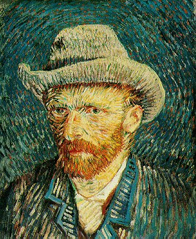
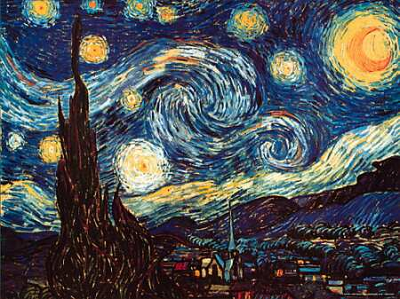
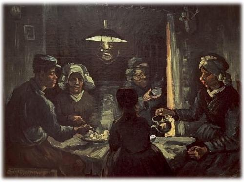
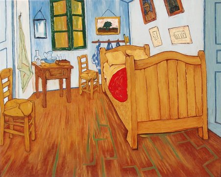

VAN GOGH AL MUSEO DELLA CITTA' DI MANTOVA
Autore di quasi 900 tele e di più di mille disegni.
Tanto geniale quanto incompreso in vita.
La propria adesione a una concezione romantica, nella quale l'immagine pittorica,l'oggettivazione della coscienza dell'artista:
identificando arte ed esistenza, van Gogh pose le basi dell'Espressionismo.
Il Museo della Città di Mantova ospiterà
per tutto il 2009 le più famose e celebrate tele di questo grande artista.


